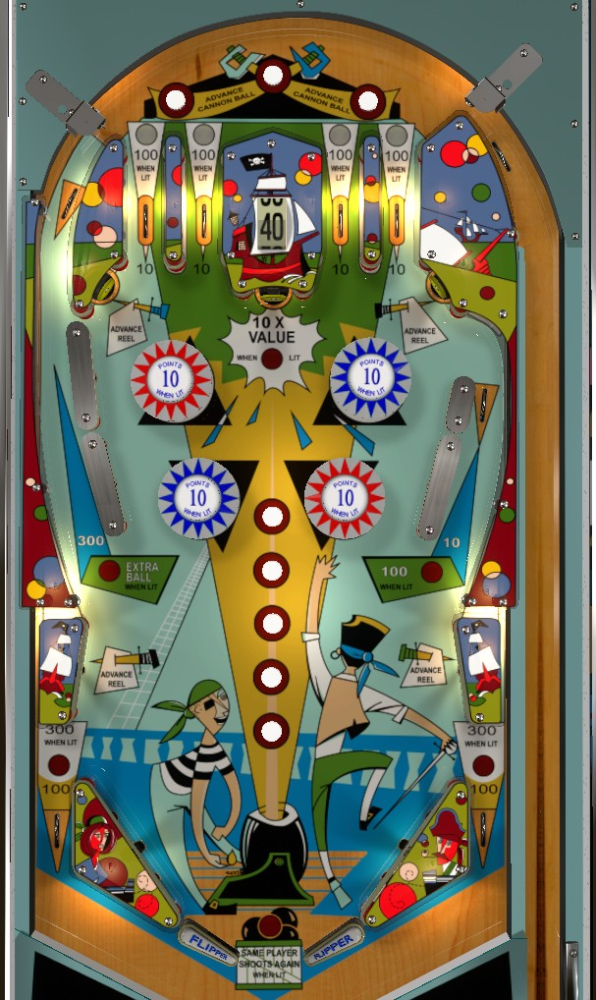

Jolly Roger (Williams, 1967)
Game rules
Nearly every feature can be lit on Jolly Roger, and is lit intermittently based on the status of the Cannon Ball, which is depicted by the five rollover buttons in a vertical line at the center of the playfield. Advance the Cannon Ball by pressing the lit rollover button in the vertical line, pressing the lit rollover button at the top of the table, or hitting one of the wall switches near the lower pop bumpers. The Cannon Ball is said to be in position 1, 2, 3, 4, or 5 if the first, second, third, fourth, or fifth button in the vertical line counting from the bottom is lit respectively.
- Top lanes score 10 points, or 100 when lit. The 1st, 2nd, 3rd, and 4th top lanes from left are lit when the Cannon Ball is in position 1, 2, 3, or 4 respectively. In position 5, all top lanes are lit.
- Pop bumpers score 1 point, or 10 points when lit. In positions 1 and 3, only the blue bumpers (upper left and lower right) are lit. In positions 2 and 4, only the red bumpers (upper right and lower left) are lit. In position 5, all bumpers are lit.
- The left shot back to the top of the playfield scores 300 points, and an extra ball when lit. It is only lit when the Cannon Ball is in position 5.
- Out lanes score 100 points, or 300 when lit. They are only lit when the Cannon Ball is in position 5.
- The top center standup target scores 10, 20, 30, 40, or 50 points as indicated by the reel just above it. The upper left and right standup targets and the wall switches just above the slingshots advance the reel's value. When this top center target is lit, it scores 10x the value displayed on the reel. This target is lit when the Cannon Ball is in position 5, but stays lit if the Cannon Ball is advanced further until either the current ball drains or the top center target is hit.
- The upper right side lane scores 10 points, or 100 when lit. Like the top center standup, this lane is lit when the Cannon Ball reaches position 5, but stays lit until the ball drains or the top center target is hit.
Slingshots score 1 point and cannot be lit. There are no in lanes. 2-inch mini flippers back up directly to the slingshots. There is no end of ball bonus or playfield Special. Tilt ends the ball in play only.
The below picture of Jolly Roger's playfield was taken from the VPX recreation by HauntFreaks. Note that the pop bumpers are coloured incorrectly in this recreation.
